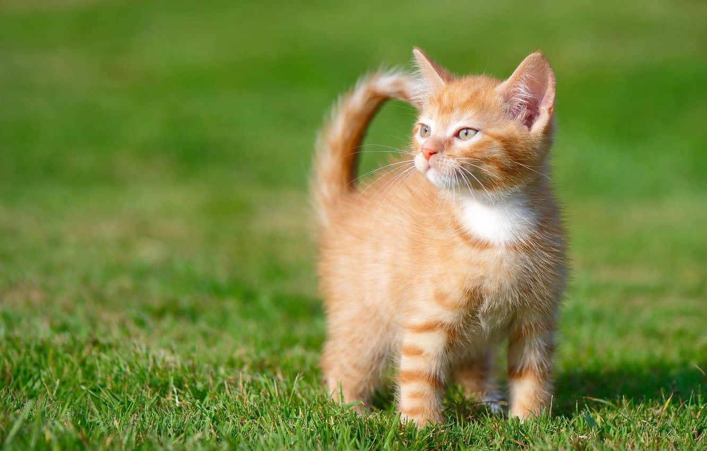
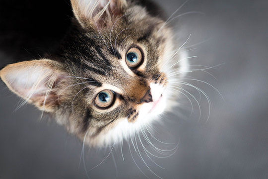
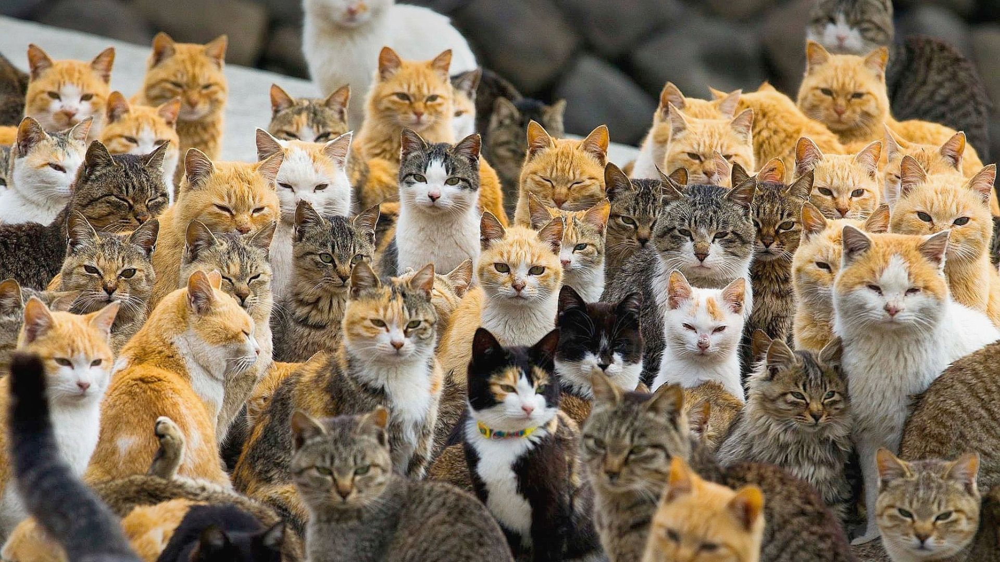
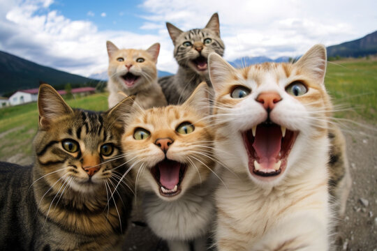

זה קרה שוב: סימבה ברח מבית הוריו

האם חתולים יכולים להחליף צבע עיניים? לא מה שחשבתם

מפתיע! נוכחות מלאה בישיבת החתולים

בדיקות שיניים בחינם עד גיל 8 לחתולים: קידום חקיקה

על רקע המשבר בין מיצי לפיצי: תתקיים ישיבת חתולים דחופה
לפני 3 דקות
נשבר שיא גינס! פיצקי בת ה 5 המליטה 12 גורי חתולים בהמלטה אחת
לפני 6 דקות
התפתחה קטטה במכולת השכונתית, החשודים עוכבו לחקירה. נמצא קולר ורוד בזירה
לפני 12 דקות
תיקון לחוק היסוד הועלה לחקיקה: חוק חינוך חובה לחתולים החל מגיל שנה
לפני 21 דקות